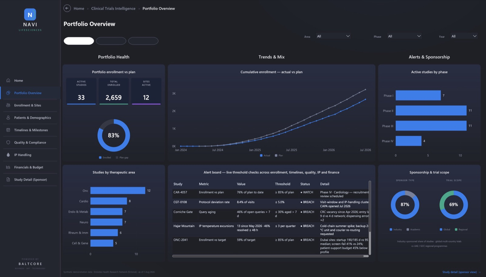
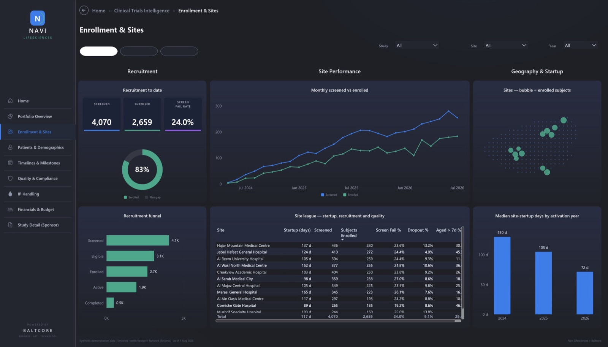
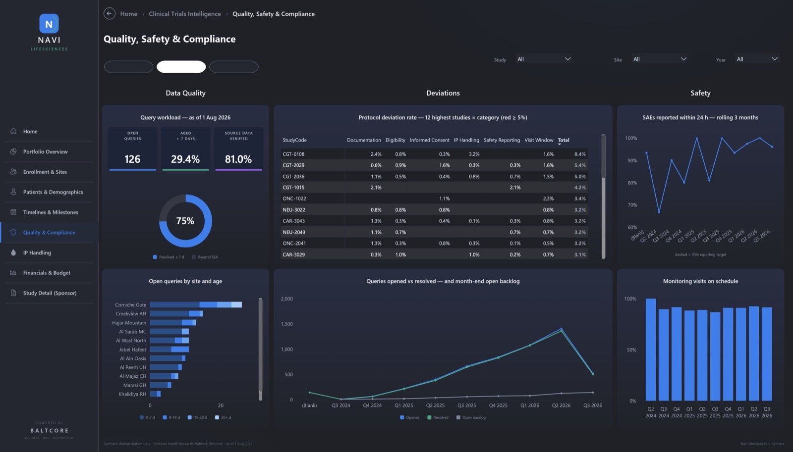
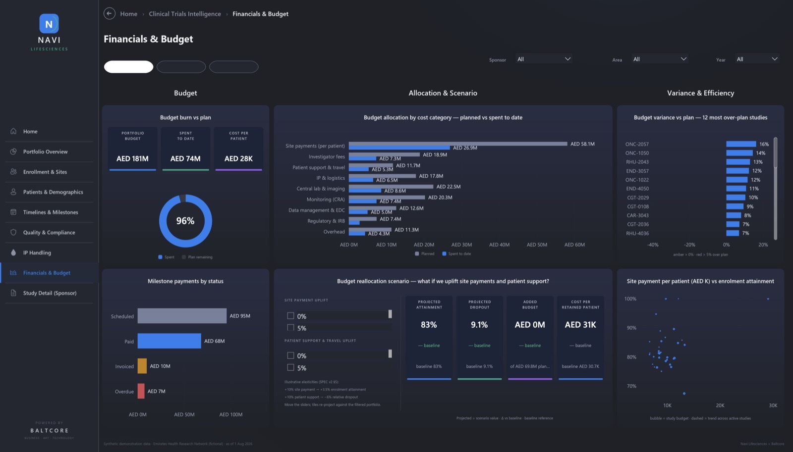

From Fragmented Trial Data to Live Decisions
One view of every study, site, subject, investigator, kit and dirham, built from the CTMS, EDC, eTMF and finance data already inside your walls. Not an IT tool: a sponsor-acquisition and regulatory-positioning asset.
In partnership withWhat Fragmented Trial Data Costs
Most research organisations still manage trials through monthly reports stitched together from separate systems. By the time a problem is visible, it is already expensive.
Miss enrolment timelines
Shortfalls surface in monthly reports, not in real time.
Of trials discontinue
Recruitment and retention failures show in the data first.
Database lock at risk
Slow query resolution erodes timelines and sponsor trust.
Weak audit readiness
No single exportable trail for regulator inspection.
Problem statistics: industry benchmarks.
The UAE Is Scaling Clinical Research
A national regulator
Federal Decree-Law 38/2024 (in force January 2025) brings trial approvals and site licensing under the Emirates Drug Establishment, with DoH and DHA adding emirate-level standards.
Volume and speed
About 400 clinical research trials are under way in Abu Dhabi alone, and electronic submissions bring full approvals down to roughly 2–3 months.
Advanced therapies are arriving
First-in-UAE gene-therapy, gene-editing and stem-cell trials, plus hospital-led CAR-T programmes with local manufacturing.
Incentives to win sponsors
A federal R&D tax credit (from January 2026) covers trial-participant payments, and the national Clinical Research Forum calls for a coordinated ecosystem.
Sources: Federal Decree-Law 38/2024; DoH Abu Dhabi via Clinical Trials Arena (2025); Abu Dhabi Media Office (2025–26); Cabinet Decision 215/2025; WAM (Dec 2025).
Eight Linked Dashboards, One Source of Truth
A live Power BI environment covering portfolio health, enrolment and sites, patients, timelines, quality and compliance, investigational product, financials and sponsor-level study detail.




Screens show synthetic demonstration data for a fictional research network. Platform developed in partnership with Baltcore.
Built in Partnership With Baltcore
The platform is developed and supported jointly by Navi Lifesciences and Baltcore, an Abu Dhabi data and AI firm that designs decision dashboards, builds the governed data foundations beneath them and deploys AI agents that act on the results.
Clients get one accountable team. Clinical-research expertise and data engineering work side by side, from KPI design through to live dashboards and ongoing support.
- Clinical-research and sponsor domain expertise
- KPI framework and role-based view design
- Stakeholder alignment with PIs, research offices and sponsors
- Regulatory and sponsor-acquisition positioning
- Power BI dashboard design and build
- Governed data foundations across CTMS, EDC, eTMF and finance
- Integration, validation and managed support
- AI agents that act on the insights
Seven KPI Categories, Each Tied to a Decision
| Category | What we measure | Decision it drives |
|---|---|---|
| Enrolment | Enrolment vs target, screen-fail rate, days to 80% | Flags lagging sites and triggers strategy shifts |
| Retention | Dropout by site, visit-schedule completion | Surfaces tolerability and consent issues early |
| Site Activation | Start-up days (IRB to FPI), deviations, visit adherence | Identifies sites for reallocation |
| Timelines | IRB approval, FPI, LPO, database lock | Exposes bottlenecks that extend cost |
| Data Quality | Query volume and aging, entry lag, % SDV complete | Protects integrity ahead of lock |
| Safety & Compliance | SAE/AE timeliness, deviations, monitoring visits | Keeps the site inspection-ready |
| Financials | Budget burn vs plan, cost per patient, milestones | Protects contract profitability |
Role-Based Views for Every Decision-Maker
CXO & Research Leadership
Portfolio enrolment, trials by phase and therapy area, budget health, sponsor mix and regulatory positioning.
Principal Investigators & CRCs
Enrolment funnel, query aging, visit adherence and SAE timeliness.
CRAs & Monitors
Deviation heat maps, monitoring-visit status and ISF readiness.
BD & Feasibility
Performance benchmarks, feasibility metrics and therapy-area capacity to win new studies.
Sponsors & CROs
A read-only KPI summary, compliance indicators and milestone tracking.
Built for Inspection Readiness
A single exportable audit trail across studies and sites, designed with EDE, DoH and DHA requirements in mind.
Five Phases, Live in 16–20 Weeks
Discovery & Data Mapping
Audit CTMS, EDC and eTMF; interview PIs and the research office; define the KPI taxonomy.
Design & Architecture
Role-based views, the Power BI layer and governance rules.
Build & Integration
Connect source systems, automate data pipelines and build the dashboards.
Validation & UAT
GCP-compliant validation and user acceptance testing with clinical operations and PIs.
Rollout & Training
Role-based training, a governance SOP, update cadence and audit trail.
See Your Trial Portfolio in One View
For hospital networks, research institutes, sponsors and CROs. Request a walkthrough of the live demo.